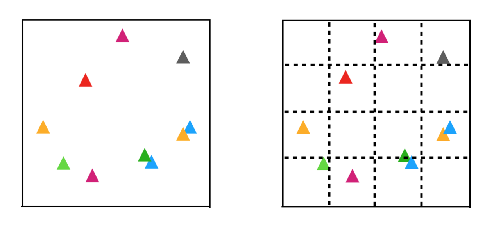
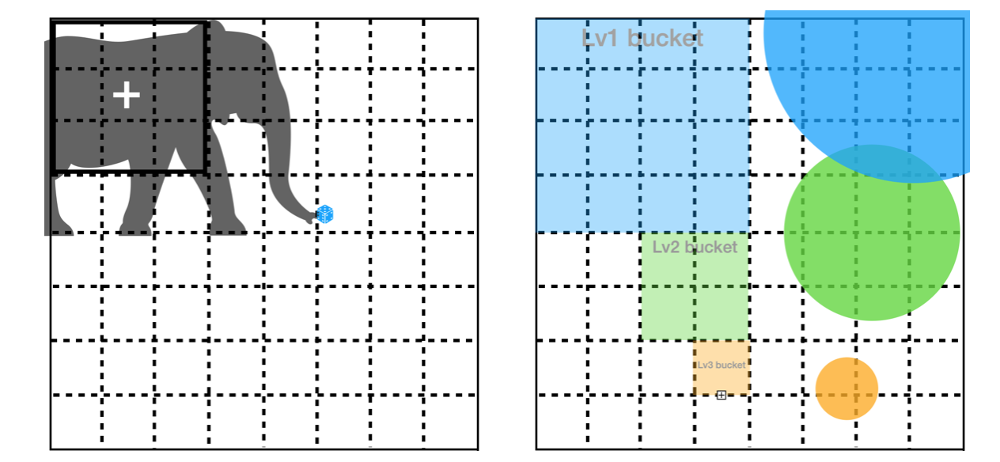
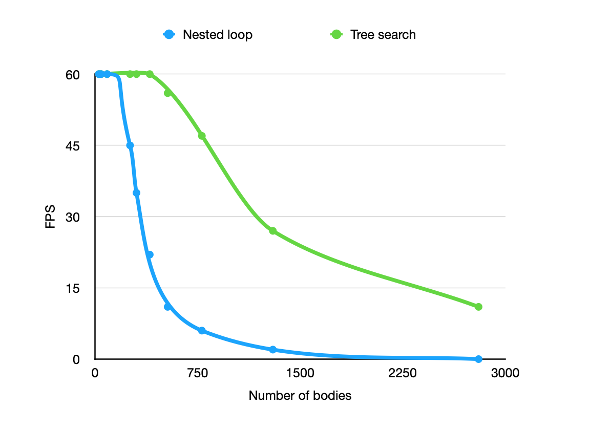
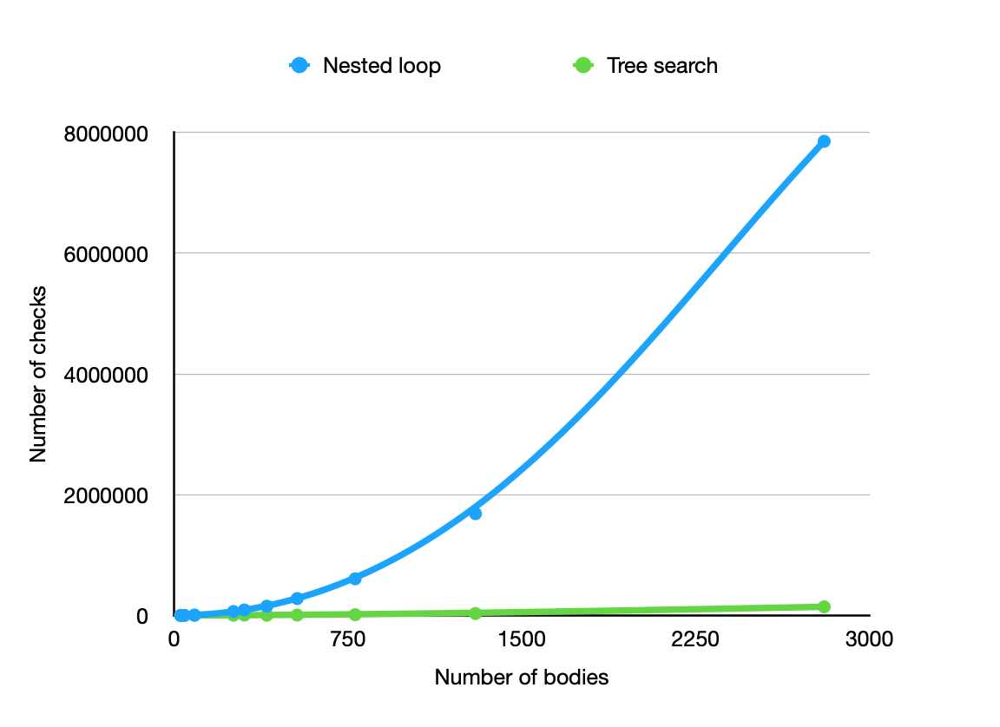

Js
Collision detection is the process of checking for intersections between geometric shapes. It is time-consuming and usually brings performance bottlenecks when you are creating your physics engine. Here, I would like to highlight my simple data structure adopted in my physics engine, which does a bit of time-memory tradeoff to improve overral performance and scalability.
Algorithms like above requires checking for pairwise collisions between all entities in the world. Due to the O(n^2) overhead, performance degrades quickly when more entities are added to the world. Usually some noticeable fps drops when starting to deal with hundreds of objects. To fix this issue. I implemented a simple quadtree data structure for storing all world objects which scales much better at larger quantities. The idea is to recursively divide the world region into 4 partitions/buckets which makes it easier to locate entities and perform other spacial queries.
As shown above, objects can only collide with others which reside in the same or adjacent buckets. It saves us some iterations during the collision detection phase. First, we need to find out which bucket does an object reside in (Find the ‘territory’). The exact bucket where an object resides can be calculated based on its location and size. (We define the location of each object as its geometry centre). Here we couldn’t just treat the smallest bucket on the grid as one’s territory due to size variations, as shown below.
The collision between the elephant and dice happed far away from the elephant’s geometry centre, therefore it would insufficient to check its 1-unit sized territory and adjacent regions. To solve this problem, a hierarchy of buckets are used to handle objects of different sizes. First we define the following terms.
Given the object’s location, we can find its territory and neighbours as defined above, then for each body in the world, it is sufficient to check within its territory and neighbours to look for potential collisions. Assuming all bodies are rigid with non-zero radius, we can achieve O(nlog(n)) in an average case.
Claim: For any pair of bodies (A, B), if A is colliding with B, then either
Proof: Assume above doesn’t hold, then we can find a colliding pair (A, B) such that neither (1) nor (2) holds. Since A is colliding with B, then we have dist(A,B) <= r(A) + r(B). Since A is not in B’s T&N region, we have dist(A,B) >= w(B) > 2*r(B). Similarly, since B is not in A’s T&N region, we have dist(A,B) >= w(A) > 2*r(A). Combine inequalities: 2*dist(A,B) > 2*(r(A)+r(B)), dist(A,B) > r(A)+r(B) which contradicts to dist(A,B) <= r(A) + r(B). QED.
Device: 2.7 GHz Dual-Core Intel Core i5, 8 GB 1867 MHz DDR3, Intel Iris Graphics 6100 1536 MB Chrome: 89
 The performance difference here is mainly because of efficient neighbour search. (At around 3000 bodies, the nested loop approach is checking 8 millions pairs per tick!)